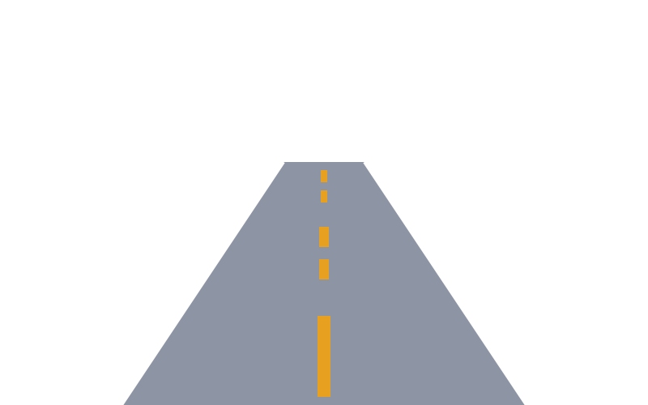
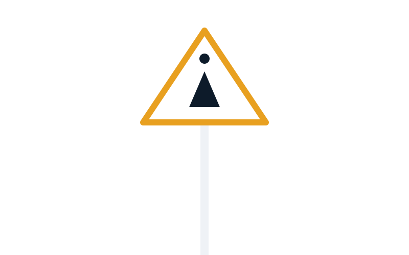
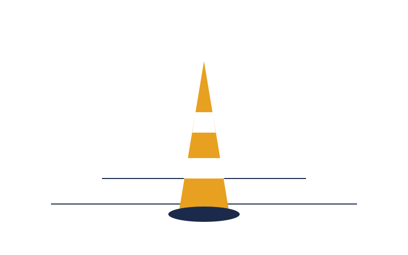

Accompagnement clé-en-main pour garantir la réussite de vos projets
Chaque projet est suivi par un conducteur de travaux attitré. De la validation du cahier des charges à la réception finale, il coordonne les équipes, contrôle la qualité des prestations et reste votre interlocuteur privilégié tout au long du chantier.
Une rigueur d'exécution industrielle et une gestion de projet étape par étape pour assurer une parfaite conformité aux normes routières.
Analyse minutieuse du terrain, relevés techniques et étude de visibilité des sols.
Sélection des résines adaptées, plans de marquage d'implantation et projections.
Demandes d'arrêtés de circulation, gestion administrative et phasage logistique.
Traçage, application de nuit/jour, balisage lourd et pose dans le respect du MASE.
Contrôles de rétroréflexion, vérification géométrique et réception contradictoire.
Planification de maintenance préventive et audits réguliers d'usure des enduits.
Découvrez notre savoir-faire concret à travers nos trois pôles d'expertise majeurs.

Tracé de haute précision pour collectivités et autoroutes.

Installation réglementaire de panneaux de police et directionnels.

Installation de mobiliers urbains et création d'îlots de sécurité.